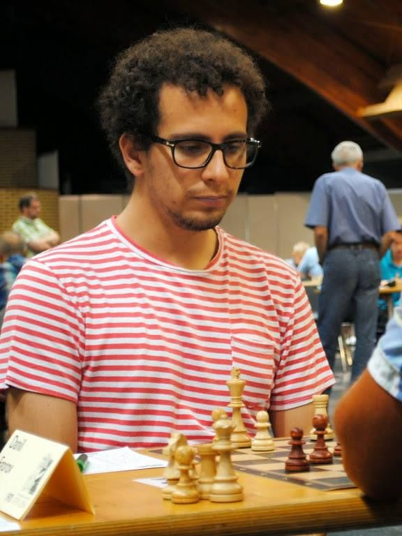

Hey welcome on board!
I'm 27 years old,born and raised in Genoa(Italy),anyway my mother is Brazilian.
Due to this reason I've been always interested and fascinating to foreing cultures and languages,and this led me to learn several languages:
I'm also a semi-professional chess player,this is actually my favorite hobby,I started when i was 12 and I have never stopped since today!
I took part to several international tournaments in Italy and abroad,took part at tournaments in Austria,France,Latvia,Switzerland,Czech Republic and many more.
In november 2016 I also won my first International torunament in Paris: Tournoi International du club 608 d'echecs with the score of 5.5/7.
I am also passionate about footbal,Art,Music,Cinema and Jpanese Manga and Anime
Last but not least my passion about technology that brought me into this marvelous journey of programming,I'm always keen on the last technologies and the upcoming ones
I think it's the essenc of human life the constant evolution of things and the improvement of past technologies to get a better quality of life.
Programming has been a tough and long journey,I learned a lot of things through out the path,but you know what's the coolest thing!?
I'm still learning a lot every day!
Down here I put my main hard skills about programming and coding.
| Front-end | Back-end |
|---|---|
| HTML5-CSS3 | PHP |
| Javascript | MySQL |
| Vue.js | Laravel |
Here some of my best soft skills that i developed in my past experiences:
You can check out my daily updates about my work and my personal life,and also my own projects on GitHub: